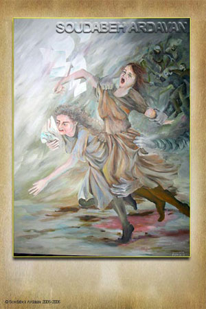

|
|

کاری از سودابه اردوان برای فعالان جنبش زنان
دو شنبه12 شهریور 1386
زنانه ها: یکی از نقاشی های سودابه اردوان که به گفته خودش این نقاشی را با الهام از دستگیری های اخیر فعالان جنبش زنان در ایران کشیده است...
کمپین یک میلیون امضا اما به کار خود ادامه میدهد. کوچه به کوچه و خانه به خانه در میزند و از حقوق زنان سخن میگوید. با امکانات کمی که در دست دارند ، بروشورهای خود را چاپ می کنند و در اختیار مردم می گذارند تا کوس رسوایی بی حقوقی نیمی از جمعیت انسانی این کشور بر سر بام ها زده شود.
کمپین یک میلیون امضا ،یک میلیون آگاهی را نوید می دهد و مگر نه اینکه لازمه ی آزادی ، آگاهی است ؟
